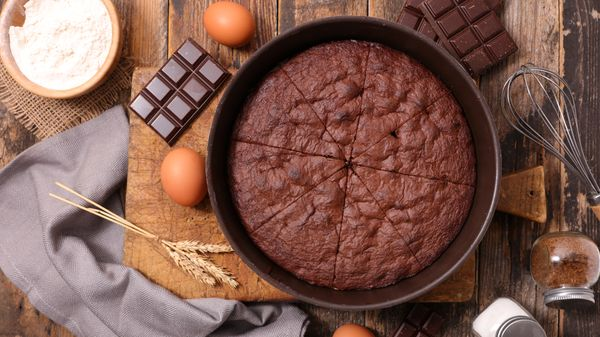

Gâteau au chocolat fondant rapide

Découvrez le somptueux gâteau au chocolat fondant, une véritable symphonie de saveurs pour les amateurs de chocolat.
Imaginez un dessert divinement moelleux, où chaque bouchée libère un torrent de chocolat fondant qui ravit les papilles.
Sa texture légère et aérienne, combinée à l'intensité du chocolat, en fait une expérience gustative incomparable.
Avec sa croûte délicieusement craquante et son cœur coulant, ce gâteau est une véritable ode à la gourmandise.
Parfait pour toute occasion spéciale ou simplement pour s'offrir un moment de pur bonheur chocolaté. Oserez-vous plonger dans cette tentation irrésistible ?
Ingrédients :
- 100g de sucre en poudre
- 50g de farine
- 100g de beurre
- 200g de chocolat pâtissier
- 3 oeufs
Préparation :
- Préchauffez votre four à 180°C (thermostat 6). Dans une casserole, faites fondre le chocolat et le beurre coupé en morceaux à feu très doux.
- Dans un saladier, ajoutez le sucre, les oeufs, la farine. Mélangez.
- Ajoutez le mélange chocolat/beurre. Mélangez bien.
- Beurrez à l'aide d'une feuille de papier essuie-tout et farinez votre moule puis y versez la pâte à gâteau.
- Faites cuire au four environ 20 minutes.
- A la sortie du four le gâteau ne paraît pas assez cuit. C'est normal, laissez-le refroidir puis démoulez- le.